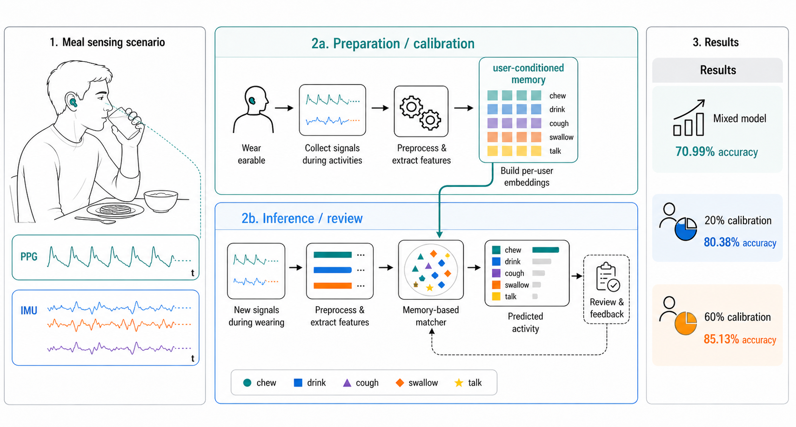

Sep 2025 — Present
Oto-Meal
Earable PPG + IMU sensing for personalized meal awareness
An audio- and image-free wearable sensing system that recognizes meal-adjacent behaviors including chewing, drinking, coughing, swallowing, talking, and rest. I built the end-to-end pipeline and a lightweight user-conditioned calibration memory for personalization.
Window-level event accuracy under the project’s window-split evaluation protocol on the seven-user dataset.
- 7 users, 538 raw recordings, and 7,028 generated windows.
- Two-stage event/rest gating and five-class behavior recognition.
- PPG+IMU outperformed either sensing modality alone.
Project Lead · 2026 National Undergraduate Innovation and Entrepreneurship Training Program National Level · CNY 25,000
Project Lead · 2026 SUSTech “Climbing Program” Project CNY 15,000
The WellComp submission is an initial report; a full-length paper is planned as the next stage.